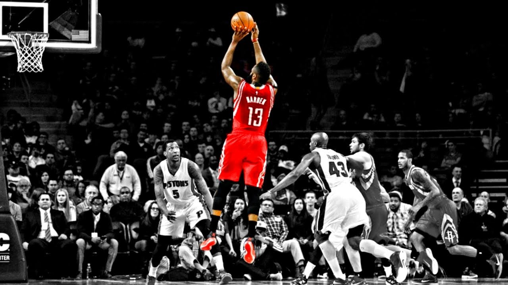

Despite being regarded by many NBA fans as one of basketball’s most polarizing players due to his play style, James Harden has managed to show the majority of court-side spectators why he is the arguably
the insane man on the basket court as of recent times.
The seven-time All-Star — who won NBA MVP in 2017-18 — is currently playing at a historic level,
averaging a career-best 36.5 points, 7.9 assists and 6.8 rebounds per game in his seventh year with the
Houston Rockets.

Stats of Harden and other 6 top player in recent 6 years
James Harden has been keeping high level performance from 2014 to 2019 regular season, and reach at peak
in recent 2 years. Harden performed outstandingly on scoring and assisting, especially for scoring. In
addition, Harden got the highest VROP in this season. “VROP (Value over Replacement Player) is a box
score estimate of the points per 100 TEAM possessions that a player contributed above a
replacement-level (-2.0) player, translated to an average team and prorated to an 82-game season” .
Stats change of Harden and another 6 top players from 2014 to 2019
How insane James Harden's scoring streak is
It’s already well-known from figure 1 that James Harden got the highest points per game in 2018-2019
regular season, but how insane James Harden's scoring streak is? The following chart shows highest
points scored by opponent player for each team. James Harden occupy 10 points which means there are 10
teams’ opponent player’s highest points scored by Harden.
Highest points scored by oppnent player for each team
The best all-around player
James Harden not only does a good job on personal scoring capability, but also he improve his team in
all aspect. Following chart show that comparing with other 6 top players in this season, Harden do a
better job on scoring, assist, steal, WS, BPM and VROP. “BPM (Box Plus/Minus) is A box score estimate of
the points per 100 possessions a player contributed above a league-average player, translated to an
average team. WS (Win shares) is an estimate of the number of wins contributed by a player provided by
NBA official.
Stats of Harden and another 6 top player in 2018-2019 regualr season